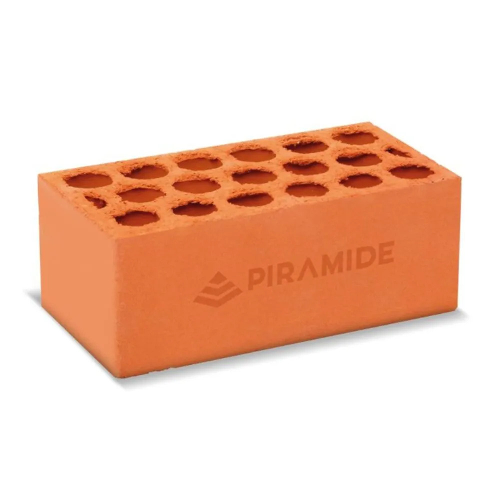

Ladrillo King Kong de 18 huecos

Ladrillo cerámico con perforaciones que ayudan a reducir su peso y permiten su uso en sistemas de albañilería compatibles con sus especificaciones. Se transporta en pilas, normalmente aseguradas con flejes y colocadas sobre pallets.